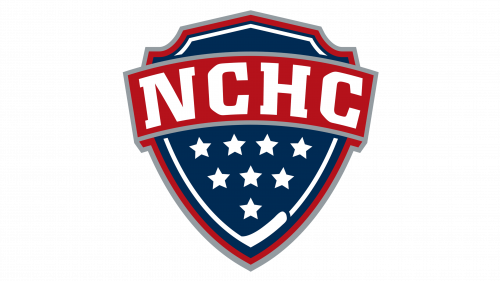

College hockey records and visualizations
College hockey
data archive.
Team results, roster movement, player origins, returning production, and NHL Draft history.
View the explorers
01 / EXPLORE THE DATA
Data explorers.
Each tool works on desktop and mobile and can create a shareable PNG from the view you build.
Team Stat Explorer
Compare scoring, shots, penalties, and special teams across a season.
Open explorer ↗Roster Origins
See the leagues, schools, transfers, and other paths that built each roster.
Open explorer ↗Preseason Production
Follow prior-season goals, assists, shots, and penalties as production returns, arrives, or leaves.
Open explorer ↗Scoring Origins
Connect players’ reported previous leagues with what they produced in college.
Open explorer ↗Draft History
Explore NHL selections on college rosters by program, position, round, and timing.
Open explorer ↗02 / ABOUT THE PROJECT
Sources and
coverage.
College Hockey Data combines current College Hockey News records with archived season, roster, and game material. Missing and unclassified records remain visible in each explorer.
Early seasons are partial. Each explorer states the seasons and fields available for its analysis.